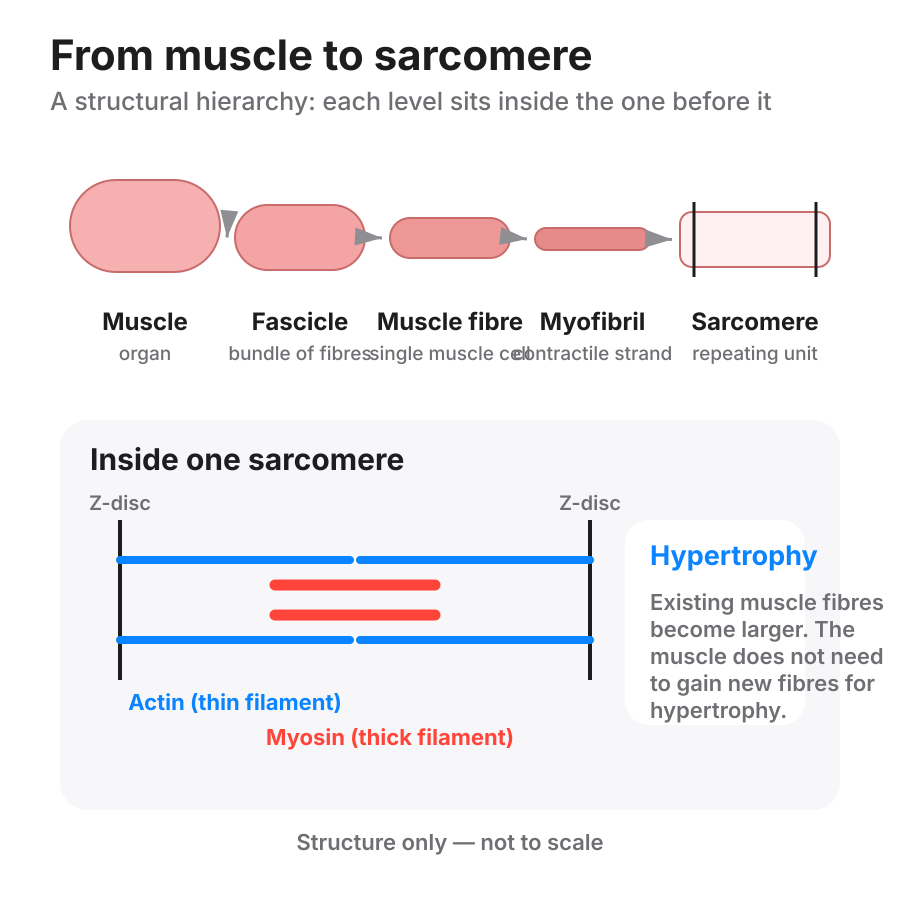

Training does not create new muscle fibres. It grows the ones already there. When a client says "you get more fibres", that is the sentence to correct.

When muscle gets bigger through normal resistance training, the main change is that the existing fibres get larger. That increase in fibre size is hypertrophy. The idea that training routinely creates entirely new fibres is called hyperplasia (hyperplasia). STS does not treat hyperplasia as a meaningful part of how people adapt to resistance training.
Growing new fibres is real, but it is a bird thing. It has been shown in chickens and quails held in a continuous stretch for up to 24 hours a day, for weeks. The load was set as a fraction of the bird's own weight. Those conditions are nothing like normal human training, and no human trains like that. Nothing shows new fibres appearing in people.
"Fibre splitting" is real, with the wrong name.
Inside a fibre, the tiny contracting strands (myofibrils) split and multiply as the fibre thickens, and the fibre can reorganise them as it grows. The fibre does not become two fibres. So a bigger muscle is the same number of fibres, each one thicker.
What this means for coaching. Nothing in the program changes. It is here because she will ask, and because "you grow more fibres" is a sentence a coach can be caught saying.
You don't grow new fibres. Training makes each one you already have thicker, and that's what a bigger muscle is.
hyperplasia: An increase in the number of muscle fibres. It has been shown in birds under constant stretch, not in people.
myofibrils: The tiny contracting strands packed inside a muscle fibre. A fibre thickens by adding more of them.